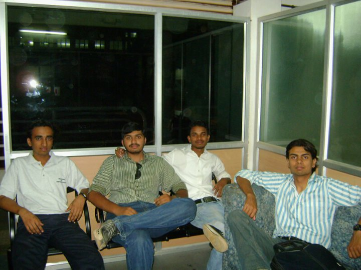
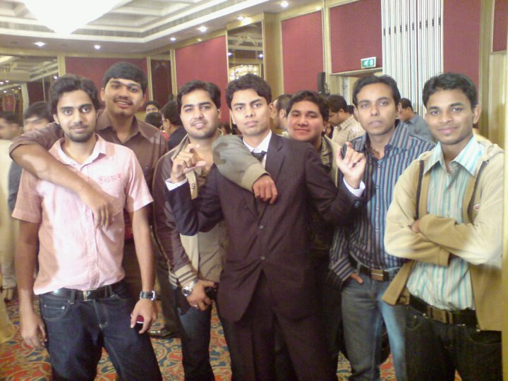
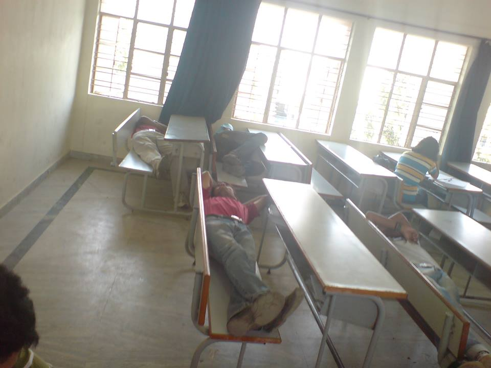
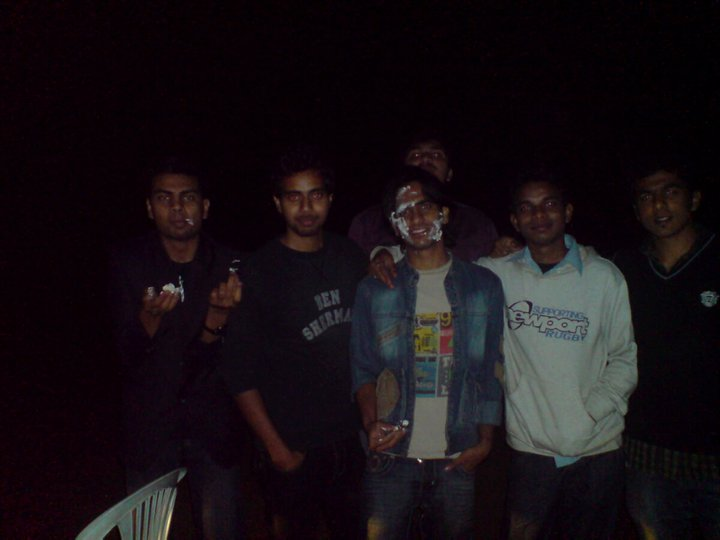
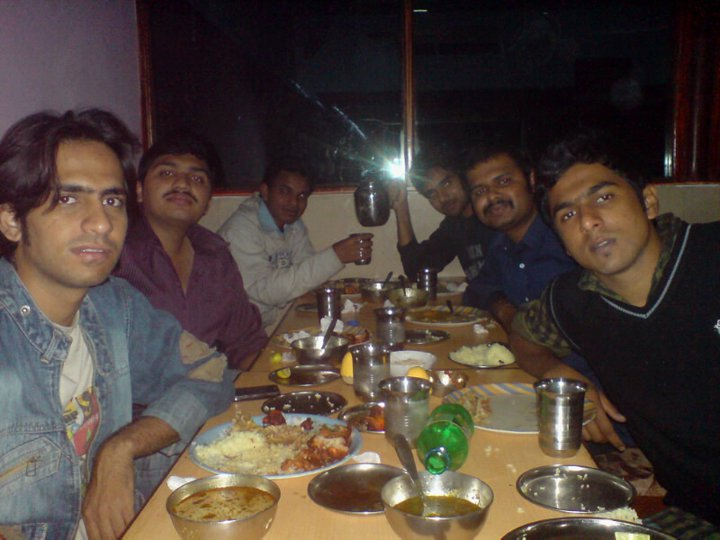

Blast From The Past
Last Updated: 10 January, 2021 | First Published: 11 June, 2013
It had been a while since I had visited Facebook... I swear! I found some interesting pictures posted by one close friend of mine, Ashwani. Stole them and re posting it here.
I think this is our college's computer science department waiting area. Starring (from left) Hiralal, Myself, Ashwani and Ahmed. 
This pic is from Ahmed's brothers marriage reception at Le Meridien, Bangalore. Starring Madhu, Myself, Ahmed's Friend 1, Ahmed, Ahmed's Friend 2, Ahmed's Friend 3 and Ashwani. 
This is us preparing for some internal exam. Starring Myself, Ahmed, Sameer, Ashwani and Amita. I am really not sure whose head that is at the corner... 
The following 2 pics are when we celebrated Ritesh's birthday by going for a long drive in the night in Janak's car. Starring Ahmed, Madhu, Ritesh, Ashwani and Hasan. The owl popping his head at the back is me. 
We were so hungry that night. We stopped in front of this closed Dhaba, entered it from the back entrance to order food. Luckily they served us. Starring Ritesh, Myself, Ashwani, Madhu, Janak, Hasan and I think Ahmed is the one clicking the pic. 
Thanks Ashwani! It was nice to see these pics after a long time.